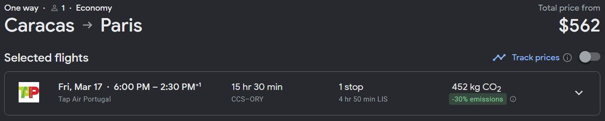
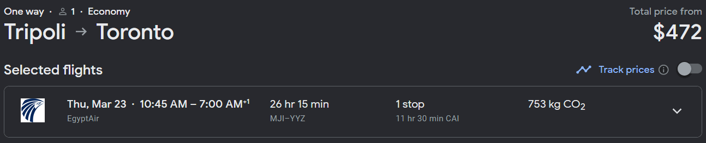

In Exit West, Saeed and Nadia get a chance at a better life and a chance to escape the warzone their city turned into through magical portals.
These magical portals randomly pop up in hidden places, and transport anyone who goes through them between two locations on Earth instantaneously.
The fact that these portals are everywhere but also relatively hidden is what puts them out of reach of the authorities, provides an accessible pathway between impoverished and wealthy countries, or in Sayeed and Nadia's case, from their war-torn city to a beach resort in Greece.
These portals don't exist in the real world, but nowadays, we have the next best thing: Air travel.
|
One can travel from Kabul, Afghanistan to London; Mogadishu, Somalia to New York; Caracas, Venezuela to Paris; or Tripoli, Libya to Toronto in comfort and safely with just one easily-bookable plane ticket for anywhere from $400 to $1000.
Compared to paying a smuggler roughly $1500 to cross deserts and mountains from Afghanistan to Istanbul, or up to $7000 to $10000 to bring you through harsh terrain, crossing the jungle that is the Darién Gap, from Venezuela to the US, all while constantly under the threat of being arrested and deported by authorities, robbed or murdered by criminals, or dying from a multitude of potential causes, these plane tickets sound like a much better deal.
This might make you wonder: Why don't migrants just fly?
The answer to that question is simple:
They can't. We don't let them.
|

|
|
|
|

|
|

|
What do I mean when I say we don't let them?
In order to travel to another country, you need a visa, or a passport that offers visa-free access (or visa-on-arrival) to that country.
For people holding United States passports or passports from developed countries / regions in general, this isn't a big issue. The United States passport gives visa-free or visa-on-arrival access to 186/227 countries and territories around the world, with notable exceptions including China and Russia (visa-required in advance) and India (e-visa required).
For Japanese citizens, they have the most powerful passport in the world, being able to visit 193/227 countries and regions around the world visa-free.
On the other hand, you have Afghani citizens, who require a visa for basically every country in the world, only being able to visit 27/227 countries and regions around the world without a visa in advance, most of which are island nations or African countries (the geographically closest one to the United States being Haiti, a country whose own citizens are already fleeing it) that have a visa-on-arrival (or visa-free) policy for nearly all nationalities.
And this assumes that someone who wants to leave Afghanistan can get a passport to begin with, as well as transit visas that are needed to connect through most major European and North American airports.
Even if they overcome all of these hurdles and finally arrive at their destination, somehow don't get deported or denied entry, then they're now in a most likely poor or tiny country without resettlement aid or opportunities.
This trend holds more generally, with developed countries such as the United States, Canada, Australia, New Zealand, the United Kingdom, or the Schengen Area (EU) all restricting visa-free entry to those from other developed countries.
Even more broadly, graphing the number of countries a country's citizens can access without having to apply for a visa in advance over its Human Development Index, we see a strong correlation (R² = 0.64).
|
|
| Country / Territory | Human Development Index | # of Visa-Free Countries / Territories |
|---|
| Afghanistan | 0.478 | 27 | | Albania | 0.796 | 115 | | Algeria | 0.745 | 53 | | Andorra | 0.858 | 168 | | Angola | 0.586 | 51 | | Antigua and Barbuda | 0.788 | 151 | | Argentina | 0.842 | 170 | | Armenia | 0.759 | 66 | | Australia | 0.951 | 185 | | Austria | 0.916 | 188 | | Azerbaijan | 0.745 | 70 | | Bahamas | 0.812 | 155 | | Bahrain | 0.875 | 87 | | Bangladesh | 0.661 | 41 | | Barbados | 0.79 | 163 | | Belarus | 0.808 | 78 | | Belgium | 0.937 | 186 | | Belize | 0.683 | 103 | | Benin | 0.525 | 61 | | Bhutan | 0.666 | 53 | | Bolivia | 0.692 | 80 | | Bosnia and Herzegovina | 0.78 | 118 | | Botswana | 0.693 | 87 | | Brazil | 0.754 | 170 | | Brunei | 0.829 | 166 | | Bulgaria | 0.795 | 174 | | Burkina Faso | 0.449 | 58 | | Burundi | 0.426 | 50 | | Cambodia | 0.593 | 54 | | Cameroon | 0.576 | 51 | | Canada | 0.936 | 185 | | Cape Verde | 0.662 | 66 | | Central African Republic | 0.404 | 52 | | Chad | 0.394 | 53 | | Chile | 0.855 | 174 | | China | 0.768 | 80 | | Colombia | 0.752 | 133 | | Comoros | 0.558 | 53 | | Congo (Democratic Republic of) | 0.479 | 42 | | Congo (Republic of) | 0.571 | 49 | | Costa Rica | 0.809 | 150 | | Croatia | 0.858 | 174 | | Cuba | 0.764 | 65 | | Cyprus | 0.896 | 177 | | Czech Republic | 0.889 | 186 | | Denmark | 0.948 | 188 | | Djibouti | 0.509 | 48 | | Dominica | 0.72 | 145 | | Dominican Republic | 0.767 | 70 | | East Timor | 0.607 | 94 | | Ecuador | 0.74 | 92 | | Egypt | 0.731 | 53 | | El Salvador | 0.675 | 132 | | Equatorial Guinea | 0.596 | 56 | | Eritrea | 0.492 | 44 | | Estonia | 0.89 | 181 | | Eswatini | 0.597 | 75 | | Ethiopia | 0.498 | 46 | | Fiji | 0.73 | 88 | | Finland | 0.94 | 189 | | France | 0.903 | 187 | | Gabon | 0.706 | 57 | | Gambia | 0.5 | 69 | | Georgia | 0.802 | 116 | | Germany | 0.942 | 190 | | Ghana | 0.632 | 65 | | Greece | 0.887 | 185 | | Grenada | 0.795 | 146 | | Guatemala | 0.627 | 133 | | Guinea | 0.465 | 56 | | Guinea-Bissau | 0.483 | 52 | | Guyana | 0.714 | 88 | | Haiti | 0.535 | 49 | | Honduras | 0.621 | 133 | | Hong Kong SAR | 0.952 | 171 | | Hungary | 0.846 | 184 | | Iceland | 0.959 | 180 | | India | 0.633 | 59 | | Indonesia | 0.705 | 71 | | Iran | 0.774 | 43 | | Iraq | 0.686 | 29 | | Ireland | 0.945 | 187 | | Israel | 0.919 | 159 | | Italy | 0.895 | 189 | | Ivory Coast | 0.55 | 57 | | Jamaica | 0.709 | 87 | | Japan | 0.925 | 193 | | Jordan | 0.72 | 53 | | Kazakhstan | 0.811 | 76 | | Kenya | 0.575 | 73 | | Kiribati | 0.624 | 124 | | Korea (South) | 0.925 | 192 | | Kuwait | 0.831 | 97 | | Kyrgyzstan | 0.692 | 64 | | Laos | 0.607 | 50 | | Latvia | 0.863 | 182 | | Lebanon | 0.706 | 42 | | Lesotho | 0.514 | 77 | | Liberia | 0.481 | 49 | | Libya | 0.718 | 41 | | Liechtenstein | 0.935 | 178 | | Lithuania | 0.875 | 183 | | Luxembourg | 0.93 | 189 | | Madagascar | 0.501 | 56 | | Malawi | 0.512 | 74 | | Malaysia | 0.803 | 179 | | Maldives | 0.747 | 89 | | Mali | 0.428 | 54 | | Malta | 0.918 | 185 | | Marshall Islands | 0.639 | 123 | | Mauritania | 0.556 | 59 | | Mauritius | 0.802 | 146 | | Mexico | 0.758 | 159 | | Micronesia | 0.628 | 118 | | Moldova | 0.767 | 121 | | Mongolia | 0.739 | 62 | | Montenegro | 0.832 | 124 | | Mozambique | 0.446 | 62 | | Myanmar | 0.585 | 47 | | Namibia | 0.615 | 79 | | Nepal | 0.602 | 38 | | Netherlands | 0.941 | 188 | | New Zealand | 0.937 | 186 | | Nicaragua | 0.667 | 128 | | Niger | 0.4 | 53 | | Nigeria | 0.535 | 46 | | North Macedonia | 0.77 | 125 | | Norway | 0.961 | 186 | | Oman | 0.816 | 82 | | Pakistan | 0.544 | 32 | | Palau | 0.767 | 120 | | Palestine | 0.715 | 38 | | Panama | 0.805 | 144 | | Papua New Guinea | 0.558 | 83 | | Paraguay | 0.717 | 142 | | Peru | 0.762 | 136 | | Philippines | 0.699 | 67 | | Poland | 0.876 | 184 | | Portugal | 0.866 | 187 | | Qatar | 0.855 | 100 | | Romania | 0.821 | 175 | | Russia | 0.822 | 118 | | Rwanda | 0.534 | 61 | | Saint Kitts and Nevis | 0.777 | 157 | | Saint Lucia | 0.715 | 147 | | Saint Vincent and the Grenadines | 0.751 | 152 | | Samoa | 0.707 | 132 | | San Marino | 0.853 | 169 | | São Tomé and Príncipe | 0.618 | 60 | | Saudi Arabia | 0.875 | 82 | | Senegal | 0.511 | 57 | | Serbia | 0.802 | 136 | | Seychelles | 0.785 | 153 | | Sierra Leone | 0.477 | 64 | | Singapore | 0.939 | 192 | | Slovakia | 0.848 | 183 | | Slovenia | 0.918 | 182 | | Solomon Islands | 0.564 | 132 | | South Africa | 0.713 | 106 | | South Sudan | 0.385 | 44 | | Spain | 0.905 | 190 | | Sri Lanka | 0.782 | 42 | | Sudan | 0.508 | 42 | | Suriname | 0.73 | 76 | | Sweden | 0.947 | 188 | | Switzerland | 0.962 | 186 | | Syria | 0.577 | 30 | | Tajikistan | 0.685 | 60 | | Tanzania | 0.549 | 72 | | Thailand | 0.8 | 78 | | Togo | 0.539 | 55 | | Tonga | 0.745 | 130 | | Trinidad and Tobago | 0.81 | 151 | | Tunisia | 0.731 | 70 | | Turkey | 0.838 | 110 | | Turkmenistan | 0.745 | 53 | | Tuvalu | 0.641 | 128 | | Uganda | 0.525 | 67 | | Ukraine | 0.773 | 144 | | United Arab Emirates | 0.911 | 178 | | United Kingdom | 0.929 | 187 | | United States | 0.921 | 186 | | Uruguay | 0.809 | 153 | | Uzbekistan | 0.727 | 59 | | Vanuatu | 0.607 | 98 | | Venezuela | 0.691 | 129 | | Vietnam | 0.703 | 55 | | Yemen | 0.455 | 34 | | Zambia | 0.565 | 71 | | Zimbabwe | 0.593 | 66 |
|
However it wasn’t always this way. If you go back 100-200 years, countries did not exert as much control over their borders.
The United States has been a nation of immigrants from its inception, yet it was one of the first to adopt modern restrictive immigration policies that targeted people from undesireable countries.
In 1875, the Page Act prohibited immigration of "unfree laborers" and women brought for "immoral purposes", which was enforced and interpreted to mainly refer to Chinese and other East Asian women, effectively banning them from moving to the United States.
This ended 99 years of (relatively) unrestricted immigration since the signing of the Declaration of Independence, and the 268 years of unrestricted immigration if you count from the formation of the Jamestown colony.
Yet even then, one didn't need a visa to travel to the United States. The main difficulty however was obtaining a passport, as at the time, in general, "states were generally more preoccupied with preventing exit rather than controlling immigration" (Czaika), while "emerging mercantilist states in northern Europe saw the population as a valuable economic resource and as potential recruits for the military" (Czaika).
This changed with World War I, with the increasing amount of refugees meant that countries wanted to prevent undesireable people from even trying to seek entry to their country, instead wanting to be able to deny those undesireables in advance. Therefore, countries starting implementing visas, instead of having an immigration officer process immigrants on arrival (for example at Ellis Island, which also showed the inequality at the time as first and second class passengers were assumed to be affluent and could bypass normal checks, while third class passengers were subject to much more detailed inspection), they would be processed in advance through counsulates and embassies overseas.
In 1924, the United States passed the Immigration Act of 1924, which required all arriving non-citizens to have visas, marking the end of any sort of idea of unrestricted immigration, even for those from Europe, as they would still have to apply for a visa in advance.
An early case of visas being used to prevent refugee arrival would be that of the St. Louis, which sailed from Hamburg, Germany to Havana, Cuba in 1939 carrying mostly Jews fleeing the Holocaust. They had valid Cuban transit visas, and most had pending US visas, however a change in Cuban policy meant that recently issued visas were cancelled. Except for a few non-Jews and a few Jews who had valid US visas, the rest were sent back to Europe after the US denied them entry as well. 620 of them were sent to Continental Europe, and 254 would later die in the Holocaust.
|

|
|
The St. Louis at the port of Hamburg (from the United States Holocaust Memorial Museum)
|
|
Sources & Inspirational Material:
Cohn, D'Vera. How U.S. immigration laws and rules have changed through history. Pew Research Center, 30 September 2015, https://www.pewresearch.org/fact-tank/2015/09/30/how-u-s-immigration-laws-and-rules-have-changed-through-history/. Accessed 22 Jan 2023.
Czaika, Mathias, Hein de Haas, and María Villares‐Varela. The Global Evolution of Travel Visa Regimes. Population and Development Review vol. 44 no. 3, https://doi.org/10.1111/padr.12166. Accessed 22 Jan 2023.
Ellis Island. Britannica, https://www.britannica.com/place/Ellis-Island. Accessed 22 Jan 2023.
Google Flights. Google, https://flights.google.com. Accessed 22 Jan 2023.
Hamid, Mohsin. Exit West. New York, Riverhead Books, 2017.
Human Development Report 2021/2022. United Nations Development Programme, https://hdr.undp.org/system/files/documents/global-report-document/hdr2021-22pdf_1.pdf. Accessed 22 Jan 2023.
Human Smuggling Fees. Open Borders: The Case, https://openborders.info/human-smuggling-fees/. Accessed 22 Jan 2023.
Nelson, Maggie. The Argonauts. Minneapolis, Graywolf Press, 2015.
Page Law (1875). Immigration History, https://immigrationhistory.org/item/page-act/. Accessed 22 Jan 2023.
Robles, Pablo, Darren Long and Dennis Wong. 100 Days of Protests Rock Hong Kong. South China Morning Post, 17 September 2019, https://www.nytimes.com/interactive/2019/10/23/nyregion/basements-queens-immigrants.html. Accessed 22 Jan 2023.
Rothschild, Connor. Map of Missing Migrants. Github Pages, https://connorrothschild.github.io/map-missing-migrants/. Accessed 22 Jan 2023.
Smuggling People from Afghanistan to Turkey. DW, 25 October 2021, https://www.dw.com/en/smuggling-people-from-afghanistan-to-turkey/a-58981207. Accessed 22 Jan 2023.
Stewart, Nikita, Ryan Christopher Jones, Sergio Peçanha, Jeffrey Furticella and Josh Williams. Underground Lives: The Sunless World of Immigrants in Queens. New York Times, 23 October 2019, https://multimedia.scmp.com/infographics/news/hong-kong/article/3027462/hong-kong-100-days-of-protests/index.html. Accessed 22 Jan 2023.
The Henley Passport Index. Henley & Partners, https://www.henleyglobal.com/passport-index/ranking. Accessed 22 Jan 2023.
Turkewitz, Julie. Photographs by Federico Rios. In Record Numbers, Venezuelans Risk a Deadly Trek to Reach the U.S. Border. New York Times, 27 October 2022, https://www.nytimes.com/2022/10/07/world/americas/venezuelan-migrants-us-border.html. Accessed 22 Jan 2023.
Visa Files, July 1, 1924 - March 31, 1944. United States Citizenship and Immigration Services, https://www.uscis.gov/history-and-genealogy/genealogy/historical-record-series/visa-files-july-1-1924-march-31-1944. Accessed 22 Jan 2023.
Visa Policy of the United States. Wikipedia, https://en.wikipedia.org/wiki/Visa_policy_of_the_United_States. Accessed 22 Jan 2023.
Visa Requirements for Afghan Citizens. Wikipedia, https://en.wikipedia.org/wiki/Visa_requirements_for_Afghan_citizens. Accessed 22 Jan 2023.
Visa Requirements for United States Citizens. Wikipedia, https://en.wikipedia.org/wiki/Visa_requirements_for_United_States_citizens. Accessed 22 Jan 2023.
Voyage of the St. Louis. Holocaust Encyclopedia, United States Holocaust Memorial Museum, https://encyclopedia.ushmm.org/content/en/article/voyage-of-the-st-louis. Accessed 22 Jan 2023.